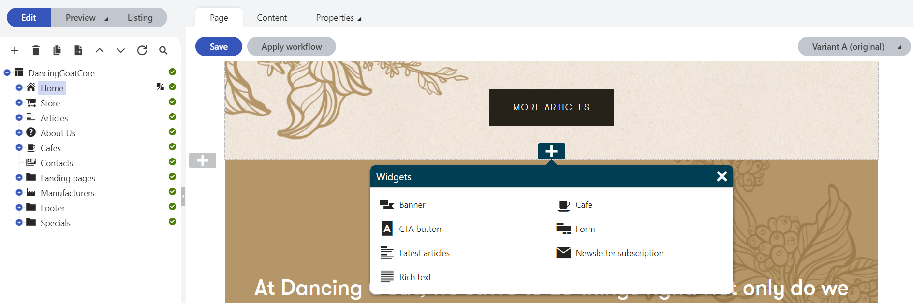

Copy of Page builder development
As a developer, you can enable content editors to create content on MVC sites using the page builder. The page builder provides a user-friendly interface where non-technical users can manage content using configurable widgets prepared by the developers. Users can also work with page templates to quickly create new pages based on predefined layouts.
The page builder should be used when you want to allow editors to create visually captivating pages and experiment with the design and layout. To learn more about scenarios for which the page builder is suitable, see Choosing the format of page content.

To start using the page builder:
Page builder components
The page builder framework consists of several components, which fit together in the following hierarchy. Additionally, widget zones can contain any number of widgets.
Editable areas
Editable areas are the top-level layout component and may contain any number of sections. You can learn how to add editable areas to a view on the Creating pages with editable areas page.
Sections
Page sections specify the visual layout of widget zones. They represent reusable pieces of markup that can store an arbitrary number of widget zones – areas where content creators place widgets. Sections are fully customizable, and as a developer, you have absolute freedom in the way you set each section's layout. See Developing page builder sections to learn how to implement and customize page sections.
Widget zones
Widget zones are components that allow content editors to insert widgets using the plus button. Widget zones are defined in the views of sections.
Widgets
Widgets are reusable components that can be easily manipulated by content editors and other non-technical users. Widgets give non-technical users more power and flexibility when adjusting page content, in addition to basic editing of text and images. By working with widgets, users can decide which components are placed on pages and where. You can learn more about widget development and customization on the Developing widgets page. The default system widgets are listed on the Reference - System widgets page.
Aside from editable regions, the page builder allows you to use page template.
Page templates
Page templates allow content editors to gain greater control over the layout of pages, without the need to ask a developer to modify the code in the MVC project. With templates, it is easy to switch between page layouts, so they are suitable for creating pages with a predesigned or repeating structure, such as landing pages. You can learn more about page template development and customization on the Developing page templates page.
Enabling the page builder
To use the page builder, you need to enable it as a feature in your MVC project.
Open your MVC project in Visual Studio.
Enable the page builder feature by calling the UsePageBuilder method of the ApplicationBuilder instance.
Enable the feature at the start of your application's life cycle, for example in the Application_Start method of your project's Global.asax file.
MVC projects created by the installer contain the ApplicationConfig class, whose RegisterFeatures method is called in the Application_Start method by default. You can use this class to encapsulate all of your ApplicationBuilder code (enabling and configuring of Xperience MVC features).
Note: The feature must be enabled before you register routes into the application's RouteTable. The Kentico().MapRoutes() method adds required routes based on the set of enabled features.
usingKentico.Web.Mvc;usingKentico.Content.Web.Mvc;usingKentico.PageBuilder.Web.Mvc;...protectedvoidApplication_Start(){...// Gets the ApplicationBuilder instance// Allows you to enable and configure Xperience MVC featuresApplicationBuilder builder = ApplicationBuilder.Current;// Enables the page builder featurebuilder.UsePageBuilder();...}
(Optional) Edit the project's Views\web.config file and add the Kentico.PageBuilder.Web.Mvc namespace.
The namespace allows you to easily access page builder extension methods in the code of your views.
Alternatively, you can add using statements for the namespace directly in the code of individual views.
<system.web.webPages.razor>...<pagespageBaseType="System.Web.Mvc.WebViewPage"><namespaces>...<addnamespace="Kentico.Web.Mvc"/><addnamespace="Kentico.PageBuilder.Web.Mvc"/></namespaces></pages></system.web.webPages.razor>
The basic page builder feature is now enabled. You can prepare pages with editable areas in your MVC project and start developing widgets and sections.